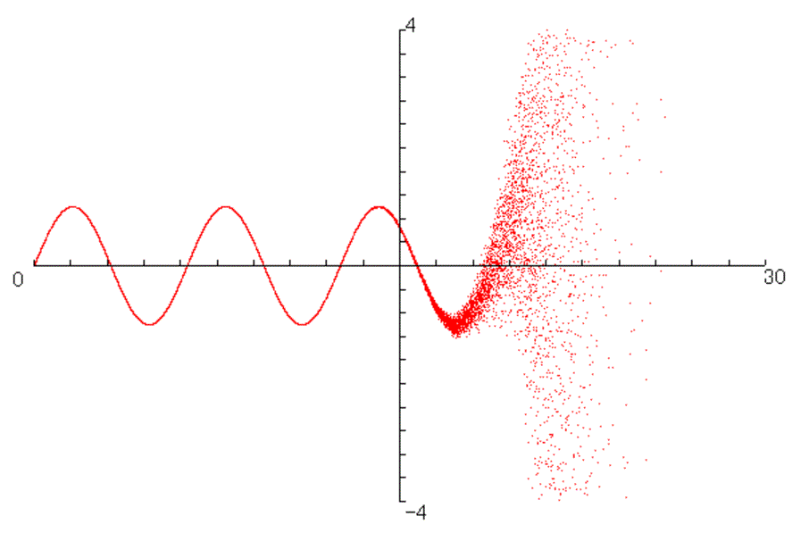

Sample codes of implementing the algorithm MmS:
MMS64LP.c
Practical & long-period (approx. 10^75)
MMS64LP-hi.c
Hi-performance version of MMS64LP.c
[time ratio (MMS64LP-hi/MMS64LP) = 0.55(about)]
MMSnnnW.c
+ MMSIniFuncs.c
Academic & long-period (nnn=64, ..., 16384)
=====
The algorithm MmS was introduced in
"Generation of nonrecursive n-bit pseudorandom
numbers by two times
(n-bit)×(n-bit)
multiplication (n = 64,128,192,...,16384)" by H. Yaguchi
(DOI 10.1515/mcma-2026-2004).
=====

The origin of the algorithm MmS is a cancellation error of numerical computation of sinx,
and is seen in
"Randomness of Horner’s rule and a new method of generating random number"
by H. Yaguchi
(DOI 10.1515/MCMA.2000.6.1.61),
"New nonrecursive pseudo-random number generator and its application to
hash function" by H. Yaguchi
(in Japanese, the appendix in English),
(http://www.math.kobe-u.ac.jp/publications/yagsuppl/kakenDocument_2013.pdf)
.
A copy of the kakenDocument_2013.pdf above is
here.
Progress after the document 2013 above is summerized
here (in Japanese).